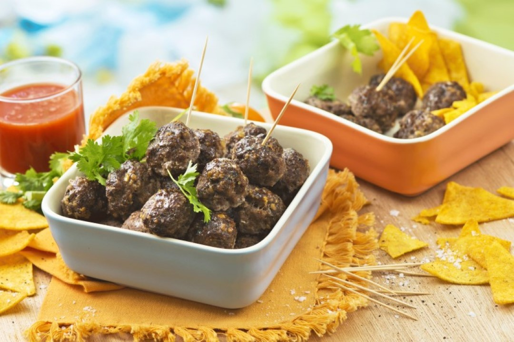

|  |
2. Sega hakkliha läbi, lisa munad, purustatud küüslauguküüned, maisikrõpsu-tomatimahlasegu, hakitud maitseroheline (jäta mõned lehed kaunistuseks) ning maitsesta soola ja pipraga. Sega mass hoolikalt läbi. 3. Kata ahjuplaat küpsetuspaberiga. Vormi tainast ahjuplaadile umbes 50 lihapalli ja küpseta 225-kraadise ahju ülemises kolmandikus umbes 20 minutit. Serveeri koos ülejäänud nacho`de, meelepärase dipikastme ja värske salatiga. |
| Toitaine | Kogus |
|---|---|
| Nachod ehk maisikrõpsud | 50g |
| Tomatimahl | 2 dl |
| Nachod ehk maisikrõpsud | 50g |
| Veisehakkliha | 1kg |
| Muna, L suurus | 2tk |
| Küüslauguküüs | 3tk |
| Koriandert või petersell | 1 pott |
| Sool | Maitse järgi |
| Must pipar | Maitse järgi |